UDN
Search public documentation:
ProceduralBuildings
日本語訳
中国翻译
한국어
Interested in the Unreal Engine?
Visit the Unreal Technology site.
Looking for jobs and company info?
Check out the Epic games site.
Questions about support via UDN?
Contact the UDN Staff
中国翻译
한국어
Interested in the Unreal Engine?
Visit the Unreal Technology site.
Looking for jobs and company info?
Check out the Epic games site.
Questions about support via UDN?
Contact the UDN Staff
UE3 Home > Static Meshes > Procedural Buildings
UE3 Home > Environment Artist > Procedural Buildings
UE3 Home > Environment Artist > Procedural Buildings
Procedural Buildings
Overview
Defining Buildings
Building Groups
When working with a building that is not just a simple shape, it usually desirable to use multiple volumes. For performance reasons though, you should group these volumes together. This is done by choosing one volume to be the 'Base' volume, and then attaching other volumes to it using the 'Base' property. This can be made a lot easier using the Attachments Editor, or the 'ProcBuilding -> Group Buildings' option in the context menu. The 'Prefab Lock' button on the editor toolbar (the letter P) is also used to choose whether you are selecting entire ProcBuilding 'groups' or individual ProcBuilding volumes within a group. The 'Base' ProcBuilding volume in a group will show its wireframe in light green instead of the usual yellow, and can be quickly selected using 'ProcBuilding -> Select Base Building'. You only need to set the Ruleset on the Base building, as child buildings will inherit this. You can set it on child Procbuilding volumes if you wish though, to override certain areas of the same ProcBuilding grouping. Note that all meshes that are used for a single building 'group' are owned by the 'Base' ProcBuilding volume, so if you click on them in the editor, you will find yourself selecting that volume.Building Properties
The properties of a ProcBuilding volume are described below - more details on many of these are given later in this document.| Ruleset | The ProcBuildingRuleset that should be applied to this volume |
|---|---|
| bGenerateRoofMesh | Whether a roof polygon should be generated for this building |
| bGenerateFloorMesh | whether a floor polygon should be generated for this building |
| bApplyRulesToRoof | If the Ruleset should be run on the roof of a building as well as the walls |
| bApplyRulesToFloor | If the Ruleset should be run on the floor of a building as well as the walls |
| bSplitWallsAtRoofLevels | If entire building group should be split horizontally at each roof level |
| bSplitWallsAtWallEdges | If building faces should be split vertically when another face intersects it |
| SimpleMeshMassiveLODDistance | How far away the building should transition to the low-LOD version |
| RenderToTexturePullBackAmount | When generating the render-to-texture for LOD, how far to pull back from building (and clip detail) |
| RoofLightmapRes | What resolution to use for lighting on the roof of the building |
| NonRectWallLightmapRes | What resolution to use for lighting on the non-rectangular wall polys |
| LODRenderToTextureScale | Controls the resolution of the LOD render-to-texture |
| BuildingMaterialParams | Additional parameters that are set on MaterialInstances applied to meshes in particular building. Can be used for tinting walls etc. |
| bBuildingBrushCollision | If collision should be enabled on the building volume itself |
Rulesets
- Break a scope into smaller scopes
- Place a mesh that takes up the space of the scope
Ruleset Properties
Once you have created a new Ruleset (in the normal way, using the Content Browser), you can open it in the Facade editor. With no rule nodes selected, the property window will show the properties of the Ruleset itself:| DefaultRoofMaterial | The material that should be applied to the roof polygon of the building |
|---|---|
| DefaultFloorMaterial | The material that should be applied to the floor polygon of the building |
| DefaultNonRectWallMaterial | The material that should be used on polygons created to fill in holes around wall scopes |
| RoofZOffset | Offset applied to the roof (at top of entire building) polygon along Z. Note that RoofEdgeScopeRaise is usually a better way to form walls around the roof. |
| NotRoofZOffset | Offset applied to roof (of any volume other than top of entire building) polygon along Z. Note that RoofEdgeScopeRaise is usually a better way to form walls around the roof. |
| FloorZOffset | Offset applied to the floor (at bottom of entire building) polygon along Z. |
| NotFloorZOffset | Offset applied to the floor (of any volume other than bottom of entire building) polygon along Z. |
| RoofPolyInset | How far to pull 'in' the vertices of the roof polygon |
| FloorPolyInset | How far to pull 'in' the vertices of the floor polygon |
| BuildingLODSpecular | Controls overall specular of the building low-LOD version |
| RoofEdgeScopeRaise | Extend any scopes that touch a roof up by this amount, forming short walls around the roof of the building |
| LODCubemap | Cubemap texture to use for cubemaps areas (normally glass) on the low-LOD version of the building |
| bLODOnlyRoof | If TRUE, a roof poly is only created for the low-LOD version of the building |
Mesh Rule
This is a very important rule, and actually adds a mesh to the building, using the size and location of the scope passed in. Meshes should always be authored so that the bottom-left corner is the origin, Z is up and X is right. You must specify how large a space you expect the mesh to take up. This is then used to adjust the size of the mesh to fill in the space that is provided for it. This allows you to have features (such as railings or trim) that extend outside the scope region that is passed in. Each mesh node supports an array of specified StaticMeshes called BuildingMeshes, and it will pick randomly from that list. The following settings are available for each mesh in the array.| Mesh | The StaticMesh to use |
|---|---|
| DimX | The X dimension (width) of Mesh |
| DimZ | The Z dimension (height) of Mesh |
| Chance | How likely this mesh is to be picked from the array. |
| Translation | An optional translation (or translation range) to apply to the mesh when placing |
| Rotation | An option rotation (or rotation range) in degrees to apply to the mesh when placing |
| bMeshScaleTranslation | If TRUE, the Translation specified is scaled by any scaling applied to the mesh |
| bOverrideMeshLightMapRes | If TRUE, use OverriddenLightMapRes instead of resolution set on the mesh |
| OverriddenMeshLightMapRes | Resolution to use for lighting on this mesh, if bOverrideMeshLightMapRes is TRUE |
| SectionOverrides | Allows you specify, for each section of this mesh, a range of possible materials to apply as random overrides |
Occlusion Test
Another important feature that a Mesh Rule performs is to test if the scope passed in is intersecting another part of the building. Consider the image below: 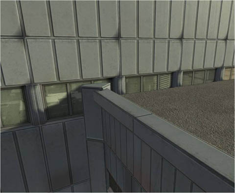 As you can see, the windows are intersecting with the roof of the building, and it looks bad. The Mesh Rule can determine if the scope is occluded, partially occluded, or not occluded. In the case where it is fully occluded (ie. entirely inside another part of the building), no mesh will be placed. If it is not occluded, one of the meshes specified in the BuildingMeshes array will be chosen. If it is partially occluded (like in the example above) the mesh specified by the PartialOccludedBuildingMesh option will be used instead. 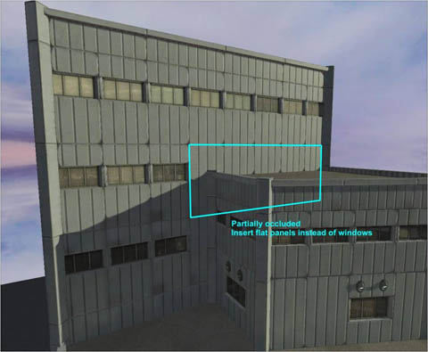 If you wish you can disable this occlusion test by setting the bDoOcclusionTest option to FALSE, so a mesh from the BuildingMeshes array is always added. Note that occlusion tests are performed using 4 points just inside the corners of the scope.Collision
By default, meshes used as part of a ProcBuilding do not have non-zero extent player collision (only zero-extent weapon collision). Player collision only happens with the volume itself (like a blocking volume) which has several advantages:- Collision is smooth and fast
- Collision does not change when the ProcBuilding's ruleset changes
Repeat Rule
This rule takes a scope and breaks it into a number of smaller scopes along an axis. 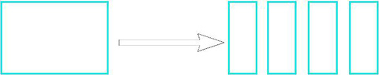 You first choose an axis (X or Z) using the RepeatAxis option and it will break up the scope along that axis into equal size pieces. It does this by making as many pieces as necessary to ensure no piece is larger than the size defined with RepeatMaxSize. This will generate a varying number of new scopes depending on the building size. Below is an example of using a Repeat Rule along Z to break a large surface into a series of 'floors', and then a Repeat Rule along X to break each floor into a series of window scopes, and then a Mesh Rule to actually place the window mesh. 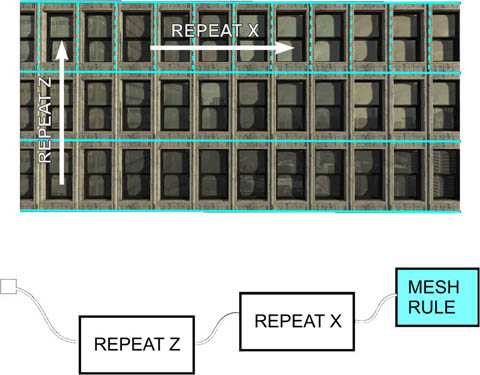Split Rule
This node is similar to the Repeat Rule, as it takes a scope and breaks it into smaller scopes based on the defined SplitAxis. However, the Repeat Rule will generate a varying number of scopes depending on the input scope size, whereas the Split Rule will always (unless the input is too small) generate the same number of output scopes. 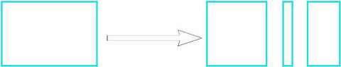 To define how the scope should be split up, the designer fills out the SplitSetup array. Each entry in the array will result in one output scope, as well as an additional output connector on the rule node. This allows you do to different things with each part of the scope. These are the properties for each entry in the array:| bFixSize | If TRUE, this output will be fixed to FixedSize. If FALSE, this output will expand as the input scope does. |
|---|---|
| FixedSize | Only used if bFixSize is TRUE, to define exactly how big the output scope should be |
| ExpandRatio | When multiple entries have bFixSize set to FALSE, this controls how they stretch. A larger number means more stretching as the input gets bigger |
| SplitName | This is used to label the output created on the rule node |
Alternate Rule
Some areas of buildings always start and end with the same feature, with another type of feature placed between. This is not easy to do with just Repeat and Split rules, so the Alternate Rule can be used. 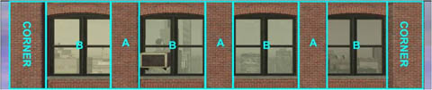 As with both Repeat and Split rules, you need to specify an axis using the RepeatAxis property. There are two outputs from this rule, labeled A and B. In the default configuration, as the scope gets larger, the B regions will stretch, but the A region will not. You specify how large B should get before another one is added using the BMaxSize property, and how large A should always be using ASize. 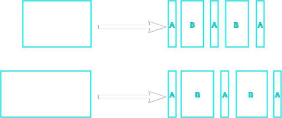 There are some other options that give you additional control:| bInvertPatternOrder | This option lets you start and end with a variable size B, instead of the fixed size A (ie. changing it from ABABA to BABAB) |
|---|---|
| bEqualSizeAB | If TRUE, forces A and B to be the same size |
Occlusion Rule
As was mentioned in the Mesh Rule node, it is sometimes desirable to perform an occlusion test on a scope. This Rule Node allows you to perform this test on any scope, rather than just before placing a mesh. You may want to, for example, test a floor of a building before splitting it up to make room for a central door.Top/Bottom Rule
Because each scope extracted from the building volume is processed by the same set of rules, you can sometimes get odd-looking features on more complicated buildings. If your ruleset put shops in at the bottom of each scope for example, upper areas of the building may end up with shop fronts, when that does not make any sense. To fix this, the Top/Bottom Rule Node allows you to test whether the top or bottom of the scope is the same as the top or bottom of the entire ProcBuilding volume group. The example below helps illustrate this: 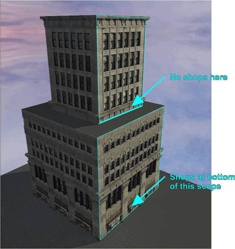 This node works by first seeing if the top of the input scope is the top of the entire building. If it is, it will remove split off the amount defined by ExtractTopZ and pass that scope out of the 'Top' output. If it is not, it will split off the amount defined by ExtractNotTopZ and pass that out of the 'Not Top' output. In this way you can, for example, have a larger trim at the top of the whole building than at the top of each step. A similar process is performed for the bottom of the building using the ExtractBottomZ and ExtractNotBottomZ values. Then the remainder of the scope is passed out of the 'Mid' output. If nothing is connected to one of the 'Top', 'Not Top', 'Bottom' or 'Not Bottom', then nothing will be split from the input scope in that case.Random Rule
The Mesh Rule already allows you to select one mesh from a set, but sometimes you want control earlier on in your ruleset, for example choosing a totally different look for a particular floor or face of the building. In addition, you might sometimes want to choose more than one option from a set. The Random Rule lets you do this. You first indicate how many outputs you would like using the NumOutputs property. Then you decide how many of those outputs may fire using the MinNumExecuted and MaxNumExecuted properties. Using this rule you can 'stack' meshes on top of each other in random ways, for example choosing a different A/C unit, sign and light for a particular area of the building. The pictures below show an example of this: 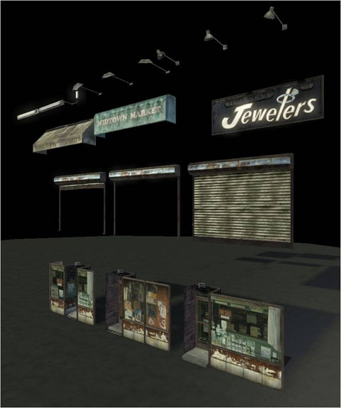 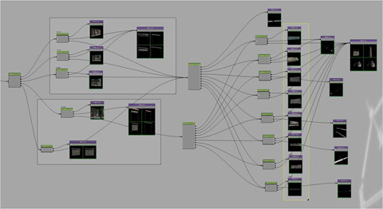 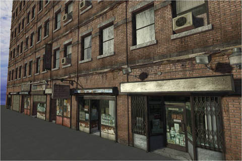Quad Rule
Sometimes there are areas of a building where a flat quad mesh with a tiling material is the best solution, and this rule node allows you to do that. As well as adding a 2-triangle quad mesh to the building, this rule will also adjust the UVs to allow you to do tiling based on the size of the scope. This is controlled with the RepeatMaxSizeX and RepeatMaxSizeZ parameters, in a similar way to the Repeat Rule. Note that there is only one copy of the quad mesh in memory, and per-instance UV adjustment is performed using material instances. This is done automatically, but you must ensure that your base Material applied to the quad (using the Material parameter) supports 4 material instance parameters: U_Scale, U_Offset, V_Scale, V_Offset. There is a master material you can use as the basis for material instances applied to quad's called EngineBuildings.BuildingQuadMaterial. Below is an example of using a quad rule for one side of a building: 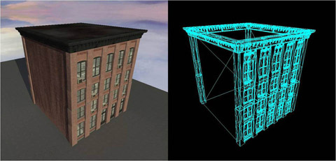 Note in this example the brick pattern is being tiled, but the dirt pattern is only happening once across the whole mesh. This can be easily set up in the material. If you want no tiling to be performed, you can set the bDisableMaterialRepeat to TRUE. You can also control the lightmap resolution on each quad mesh placed with the QuadLightmapRes property. You can also offset the quad mesh along Y (ie. into or out from the building) using the YOffset setting.Sub Ruleset
When working with Rulesets, it is possible to create some quite complicated graphs. Also, you sometimes create parts of a Ruleset that you wish to use in multiple other Rulesets (for example, a particularly detailed shop-front area). The help with this, it is possible to create a SubRuleset Node, and use the SubRuleset property to point to another Ruleset. Whatever scope is passed into the node will then be passed into the start of that Ruleset. In this way you can keep each Ruleset small, and avoid some unnecessary duplication. Note that you should be careful not to create 'cycles', where Rulesets refer to each other.Size Rule
This offers you a simple choice based on the dimensions of a scope. You first pick the axis that you are interested in with the SizeAxis property, and then the size at which the decision will be made. If the scope dimension is small than this, then it will be passed out of the 'Less' output, otherwise it will be passed out of the 'Greater/Equal' output. The bUseTopLevelScopeSize option let you make this decision based on the 'top level' scope (ie. the entire building face size) instead of the scope passed in. The Size Rule can be used to avoid meshes becoming too squished. In the example below, the 3-window mesh is being squished and does not look good. The designer then uses a Size rule to use a 2 or 1 window version of the mesh when the space is small. The same is done with the trim work. 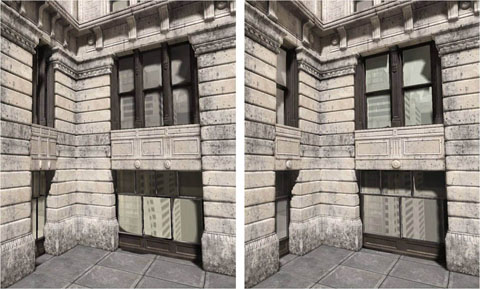Comment
This special node does not perform any action, but allows you to put a box around areas of the Ruleset and comment them, in the same way as Kismet.Variation Rule
By default the Ruleset applied to a ProcBuilding is applied to all faces. However, it is sometimes desirable to have a different appearance on different faces. To support this, you can use a Variation Rule. To add a 'variation' to a Ruleset, you first have to select the Ruleset itself in Facade (you do this by deselecting all nodes). Then you can add an element to the Variations array, giving a name for that variation (for example 'PlainBrickSide'). Then, whenever you place a Variation Rule node in Facade, it will have one output for each new variation you created for the Ruleset, plus a 'default' output at the top. When the level designer wishes to use a particular variation on a face of the building, they simply do the following:- Go into geometry editing mode
- Select the face(s) of the building volume you wish to change
- Right click and choose the ProcBuilding menu
- Select the desired variation name from the list
Edge Mesh Rule
Is it sometimes possible to create a ruleset where the edges of each face are flat, and so corners just work naturally. An example of this is below: 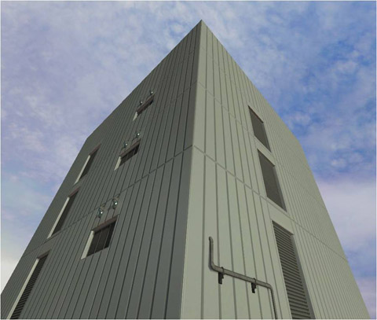 However, this is not always the case. One approach for making corners look better when the meshes do not perfectly match is to place a mesh down the edge, at an angle half way between the faces. The Edge Mesh Rule does this. It will take the left edge of the scope passed in, and generate a new scope out of the 'Edge' output, angled half way between the two faces. The rest of the scope is slightly 'pulled in' from each vertical edge by the amount specified with the MainXPullIn property. If the angle between the faces is less than FlatThreshold degrees, no Edge scope is generated. The result looks like the example below: 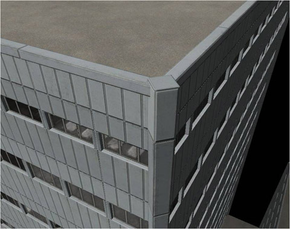Corner Rule
To get the best looking corners on buildings, it is often desirable to create a custom corner mesh to handle different angles between faces. The Corner Rule node was designed to make this easy. When using the Corner Rule, each scope is designated as 'owning' its left-hand edge. It will split off a portion on the left and right of the scope passed in, and pass the scope it makes on the left out of the output that most closely matches the angle between faces. On the right it will just leave a gap, expecting that area to be filled in by the scope around the building to the right. 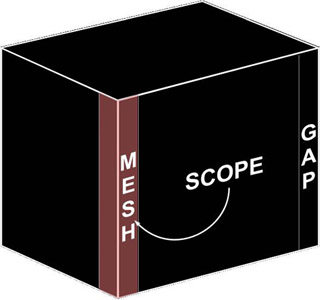 You can make a corner node support any number of angles (for example, 0, -90 and +90 degrees), by adding entries to the Angles array. You also control how much X space is taken up by the edge scopes using the CornerSize property. If you wish to override the amount of space to use for each angle, you can change the CornerSize in the Angles array entry to a non-zero value instead. Some other properties of the corner node are:| FlatThreshold | If the angle between two scopes is less than this amount (in degrees), no mesh is added. |
|---|---|
| bNoMeshForConcaveCorners | If TRUE, no space is left or mesh inserted for concave corners |
Roof Corners
One problem that you run into when using curved or beveled corners is that the roof polygon (generated based on the ProcBuilding volume faces) does not match the actual shape of the roof. The fix this, you can specify some additional information in the corner node, and this will be used to reshape the corners of the roof poly. Note that the system finds the highest corner node to get this information. 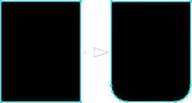 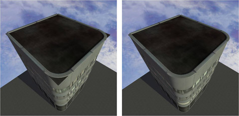 The properties in the Corner Rule node that control the roof corner shape are:| CornerType | The shape of the corner - this can be EPBC_Default (the standard square corner), EPBC_Chamfer (diagonally cut corner) or EPBC_Round (rounded corner) |
|---|---|
| RoundTesselation | If the corner shape is EPBC_Round, this controls how much tessellation is used to round the corner |
| RoundCurvature | This controls the shape of the rounded corner |
| CornerShapeOffset | How far from start of curve mesh region to actually chamfer/round adjust roof poly corner |
Horizontal Splitting
In order to process a building, the system has to find which top-level scopes meet at each edge. This can be difficult when more than 2 edges meet at a single edge, as shown in the image below: From looking at this, it is clear that it would not be possible to choose one corner mesh for the yellow edge and make the results look good. To fix this, the system will 'cut' all scopes at each different roof level in the ProcBuilding group. This can seen in this image: 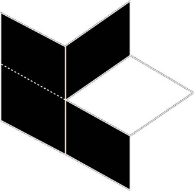 You can disable this behavior if you wish by setting the bSplitWallsAtRoofLevels on the ProcBuilding volume to FALSE. This process does normally work quite well though, as many real building will continue trim at a roof level around the entire building, as can be seen here: 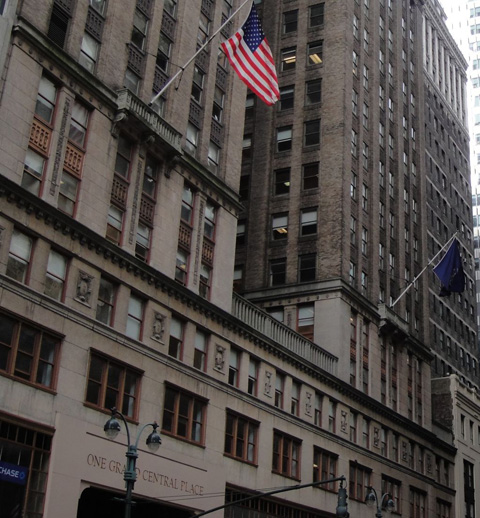 Here is an example of a ProcBuilding with and without that option turned on. As you can see, the building on the left has some holes, because it cannot do a good job of adding trim where the lower roof level meets the rest of the building. 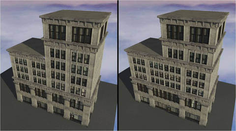LOD
Windows
Buildings usually have glass windows, and this usually done with reflective cubemaps. As a result, the LOD needs a mask for the reflective windows or this will lose the reflection and create a very noticeable pop when transitioning. This is done automatically, but does require some setup on the meshes. The generate the low LOD textures, 3 rendering passes are made on the building. They are:- Unlit, to gather diffuse color
- Lighting Only, to gather lighting information
- Window Mode, where all windows are white and non-window areas are black